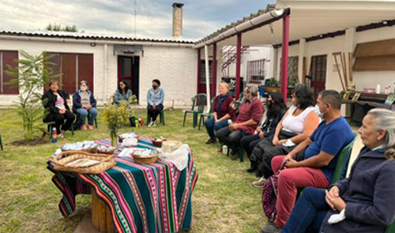
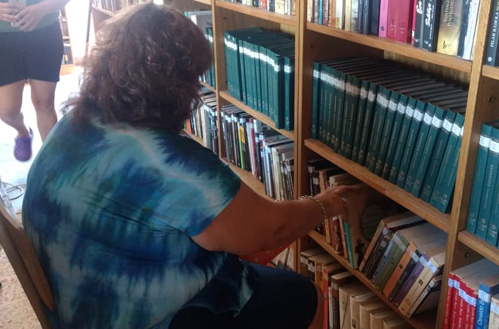

Taller de huerta
2022/03/22
El lunes pasado, nos reunimos con un grupo de participantes del proyecto "Bibliotecas de Semillas", iniciado el año pasado con la actividad de "plantar memoria".
En esta ocasión, se entregaron semillas de temporada, abordamos diferentes dialogamos sobre el cuidado y preparado de la tierra, los almácigos, germinaciones, se compartieron saberes de los participantes y mucho más.
Se realizó una degustación como presentación de una propuesta de cocina con elementos no tradicionales.
No dudes en acercarte a participar de este proyecto que busca fomentar las huertas familiares, la soberanía alimentaria, el saber colectivo, entre otros..
Leer más

Taller La Casita de los Libros
2022/02/16
Continúan los encuentro de este espacio de poesía, cuentos y canciones para niños y niñas de 4 a 8 años. Los encuentros son en nuestra Biblio los Sábados a las 10:30 hs. Te vas a divertir, emocionar y hacer amigos. Te esperamos.
Leer más

Apertura 2022
2022/02/15
Ya recargamos las pilas para comenzar esta nueva temporada de la Biblioteca popular "Virrey del Pino".
Te esperamos a partir de este lunes, 21 de febrero, en nuestros horarios habituales de atención.
Lunes a viernes de 16:30 a 19:30 horas.
Los esperamos!!
Leer más

Iluminar de Noche
2021/11/18
Ya está llegando, se viene el último encuentro del año del ciclo "Iluminar la noche"
Gracias amig@s de Contarte Cultura por ayudarnos a difundir lo que hacemos!!!!
Hacé un click: 👉https://contarte.com.ar/.../la-biblioteca-virrey-del.../
Leer más